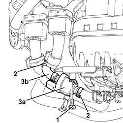
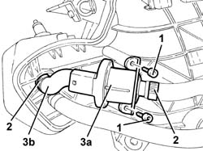

1080E28 ENABLEMENT SOLENOID FOR FLOW OF FUEL VAPOUR TO INLET - R+R
- Path
- Procedures > 10 ENGINE UNIT > 1080 EXHAUST EMISSION CONTROL SYSTEM > 1080E EVAPORATION CONTROL SYSTEM > 1080E28 ENABLEMENT SOLENOID FOR FLOW OF FUEL VAPOUR TO INLET - R+R
- Kind
- repair procedure (removal / refitting; the operation number is the code)
- Applies to
- engines: 1.8 T.SPARK, 2.0 JTS, 3.2 V6; all production periods
- Interactive page
- https://sloeber94.github.io/elrnDB-aGt/en/#/125001141
Applies to: engines: 2.0 JTS; all production periods
 Removing
Removing
 Refitting
RefittingPosition the vehicle on a lift.
Make sure that the ignition key is in the OFF position, then disconnect the negative battery terminal (-)
Description | Connector | |
|---|---|---|
- | Battery | See A1B BATTERY ( BATTERY NEGATIVE ) |
Proceed with the removal
Op. 1016A40 IGNITION COIL COVER ON CYLINDER HEAD- R+R.
Proceed with the removal
Op. 7055B54 UNDER-ENGINE GUARD - R R.
Proceed with the removal
Op. 1076B18 RIGID SECTION OF EXHAUST PIPE BETWEEN CATALYTIC CONVERTER AND SILENCER - R + R.
Proceed with the removal
Op. 1048A59 PIPE from flow meter to throttle casing hose - R.R..
Proceed with the removal
Proceed with the removal
Op. 1072D10 MODULAR INLET MANIFOLD - R+R.
1. Working at the bench, unscrew the bolts securing the solenoid enabling the passage of fuel vapours to the intake.
2. Loosen the collars.
3. Remove the solenoid enabling the passage of fuel vapours to the intake (3a) complete with pipe (3b).

Applies to: engines: 2.0 JTS; all production periods
Refitting
RemovingRefit the solenoid enabling the passage of fuel vapours to the intake with its pipe and tighten the bands.
Working at the bench, unscrew the bolts securing the solenoid enabling the passage of fuel vapours to the intake.
Proceed with the refitting
Op. 1072D10 MODULAR INLET MANIFOLD - R+R.
Proceed with the refitting
Proceed with the refitting
Op. 1048A59 PIPE from flow meter to throttle casing hose - R.R..
Proceed with the refitting
Op. 1076B18 RIGID SECTION OF EXHAUST PIPE BETWEEN CATALYTIC CONVERTER AND SILENCER - R + R.
Proceed with the refitting
Op. 7055B54 UNDER-ENGINE GUARD - R R.
Proceed with the refitting
Op. 1016A40 IGNITION COIL COVER ON CYLINDER HEAD- R+R.
Connect the negative battery terminal (-).
Remove the vehicle from the lift.
Applies to: engines: 3.2 V6; all production periods
.
Applies to: engines: 1.8 T.SPARK; all production periods
Removing
Refitting- Position the vehicle on a lift.
- Make sure that the ignition key is in the OFF position, then disconnect the battery terminal (-).
Description | Connector | |
|---|---|---|
- | Battery | See A001 Battery |
- Op. 1016A40 IGNITION COIL COVER ON CYLINDER HEAD- R+R
- Op. 1056B60 TUBO COLLETTORE COMBUSTIBILE UNICO, COMPLETO DI ELETTROINIETTORI - S.R.
- Op. 1072D10 MODULAR INLET MANIFOLD - R+R
- Working at the bench, unscrew the bolts securing the solenoid enabling the passage of fuel vapours to the intake.
- Loosen the collars.
- Remove the solenoid enabling the passage of fuel vapours to the intake (3a) complete with pipe (3b).

Applies to: engines: 1.8 T.SPARK; all production periods
Refitting
Removing- Refit the solenoid enabling the passage of fuel vapours to the intake with its pipe and tighten the bands.
- Tighten the bolts securing the solenoid enabling the passage of fuel vapours to the intake.
- Op. 1072D10 MODULAR INLET MANIFOLD - R+R
- Op. 1056B60 TUBO COLLETTORE COMBUSTIBILE UNICO, COMPLETO DI ELETTROINIETTORI - S.R.
- Op. 1016A40 IGNITION COIL COVER ON CYLINDER HEAD- R+R
- Connect the negative battery terminal (-).
- Remove the vehicle from the lift.
Topics linked from this page (7)
- 1016A40 IGNITION COIL COVER ON CYLINDER HEAD- R+R
- 1048A59 PIPE from flow meter to throttle casing hose - R.R.
- 1072D10 MODULAR INLET MANIFOLD - R+R
- 1076B18 RIGID SECTION OF EXHAUST PIPE BETWEEN CATALYTIC CONVERTER AND SILENCER - R + R
- 1080E20 ACTIVE CARBON FILTER FOR FUEL VAPOURS - R + R
- 5530B10 BATTERY - R+R
- 7055B54 UNDER-ENGINE GUARD - R R